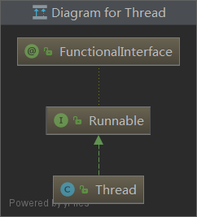
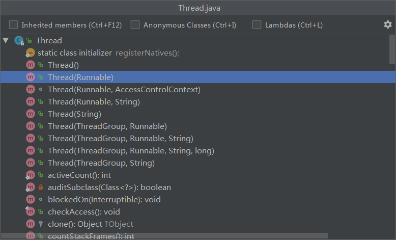

1. Java实现多线程四种方式
- 继承
Thread类。 - 实现
Runable接口。 - 实现
Callable接口。 - 线程池。
2. 继承Thread类
2.1 简介
Thread类来自java.lang.Thread。
Thread类的继承关系：

Thread类实现了Runable接口和Runable接口的run()方法。
2.2 示例
以下创建MyThread类继承Thread类，并重写run()方法：
1 | /** |
测试代码：
1 | /** |
在启动的多线程的时候，需要先通过Thread类的继承类MyThread类的构造方法构造出对象，然后调用MyThread对象的start()方法来运行多线程代码。
2.3 测试效果
控制台打印输出：
第一次运行：
1
2
3
4
5
6
7
8
9
10
11
12b运行0次
a运行0次
b运行1次
a运行1次
a运行2次
b运行2次
a运行3次
a运行4次
b运行3次
b运行4次
Process finished with exit code 0第二次运行：
1
2
3
4
5
6
7
8
9
10
11
12a运行0次
b运行0次
a运行1次
b运行1次
b运行2次
a运行2次
a运行3次
b运行3次
a运行4次
b运行4次
Process finished with exit code 0
发现两次运行，多线程的代码执行顺序不一样。
3. 实现Runable接口
3.1 简介
Runable接口来自java.lang.Runnable。
Runable接口仅定义了一个run()抽象方法。
1 |
|
3.2 示例
以下创建MyThread1实现Runnable接口，重写Runnable接口的run()抽象方法：
1 | /** |
测试代码：
1 | /** |
在启动的多线程的时候，需要先通过Thread类的构造方法Thread(Runnable target)构造出对象，然后调用Thread对象的start()方法来运行多线程代码。
Thread类构造方法：

1 | /** |
把Runnable接口的实现类MyThread1的对象向上转型变成Runnable接口的对象target。如果不懂，可以思考一下List<String> list = new ArrayList<>();，List是接口，ArrayList是List接口的实现类，是面向接口编程思想：https://blog.csdn.net/jingshaozhi/article/details/80006464
3.3 测试效果
控制台打印输出：
第一次运行：
1
2
3
4
5
6
7
8
9
10
11
12c运行0次
d运行0次
d运行1次
c运行1次
c运行2次
d运行2次
d运行3次
c运行3次
d运行4次
c运行4次
Process finished with exit code 0第二次运行：
1
2
3
4
5
6
7
8
9
10
11
12c运行0次
d运行0次
d运行1次
d运行2次
c运行1次
c运行2次
d运行3次
d运行4次
c运行3次
c运行4次
Process finished with exit code 0发现两次运行，多线程的代码执行顺序依然不一样。
所以：多线程代码执行顺序都是不确定的，每次执行的结果都是随机的。
4. 小结
无论以何种方式实现多线程，启动线程以外的线程，唯一方法就是通过
Thread类对象的start()方法。查看
Thread类源码：1
2
3
4
5
6
7
8
9
10
11
12
13
14
15
16
17
18
19
20
21
22
23
24
25
26
27
28
29
30
31
32
33
34
35
36
37
38
39
40
41
42
43
44
45
46
47
48
49
50
51
52
53
54
55
56
57
58
59
60
61
62
63
64
65
66
67
68
69
70/**
* Causes this thread to begin execution; the Java Virtual Machine
* calls the <code>run</code> method of this thread.
* <p>
* The result is that two threads are running concurrently: the
* current thread (which returns from the call to the
* <code>start</code> method) and the other thread (which executes its
* <code>run</code> method).
* <p>
* It is never legal to start a thread more than once.
* In particular, a thread may not be restarted once it has completed
* execution.
*
* @exception IllegalThreadStateException if the thread was already
* started.
* @see #run()
* @see #stop()
*/
public synchronized void start() {
/**
* This method is not invoked for the main method thread or "system"
* group threads created/set up by the VM. Any new functionality added
* to this method in the future may have to also be added to the VM.
*
* A zero status value corresponds to state "NEW".
*/
if (threadStatus != 0)
throw new IllegalThreadStateException();
/* Notify the group that this thread is about to be started
* so that it can be added to the group's list of threads
* and the group's unstarted count can be decremented. */
group.add(this);
boolean started = false;
try {
start0();
started = true;
} finally {
try {
if (!started) {
group.threadStartFailed(this);
}
} catch (Throwable ignore) {
/* do nothing. If start0 threw a Throwable then
it will be passed up the call stack */
}
}
}
private native void start0();
/**
* If this thread was constructed using a separate
* <code>Runnable</code> run object, then that
* <code>Runnable</code> object's <code>run</code> method is called;
* otherwise, this method does nothing and returns.
* <p>
* Subclasses of <code>Thread</code> should override this method.
*
* @see #start()
* @see #stop()
* @see #Thread(ThreadGroup, Runnable, String)
*/
public void run() {
if (target != null) {
target.run();
}
}分析以上源码可以知道，
start()方法调用了native方法start0()（使用native关键字说明这个方法是原生函数，也就是这个方法是用C/C++语言实现的，由Java去调用），它将启动一个新的线程，并执行run()方法：- 如果是以继承
Thread类的方式，执行Thread类的子类重写的run()方法。 - 如果是以实现
Runable接口的方式，执行实现类重写的run()方法。
- 如果是以继承
start()方法的调用后并不是立即执行多线程run()代码，而是使得该线程变为可运行状态（Runnable），什么时候执行是由操作系统调度决定的。run()方法是多线程的一个接口约定，所有的多线程代码都写在run()方法里面。多线程代码执行顺序是不确定的。
运行程序
main()方法时，JVM便启动一个Java进程，main()是主线程，然后随着调用对象的start()方法，另外的线程也启动了。